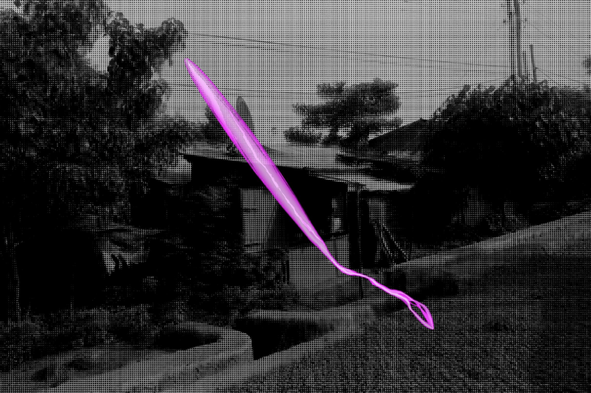
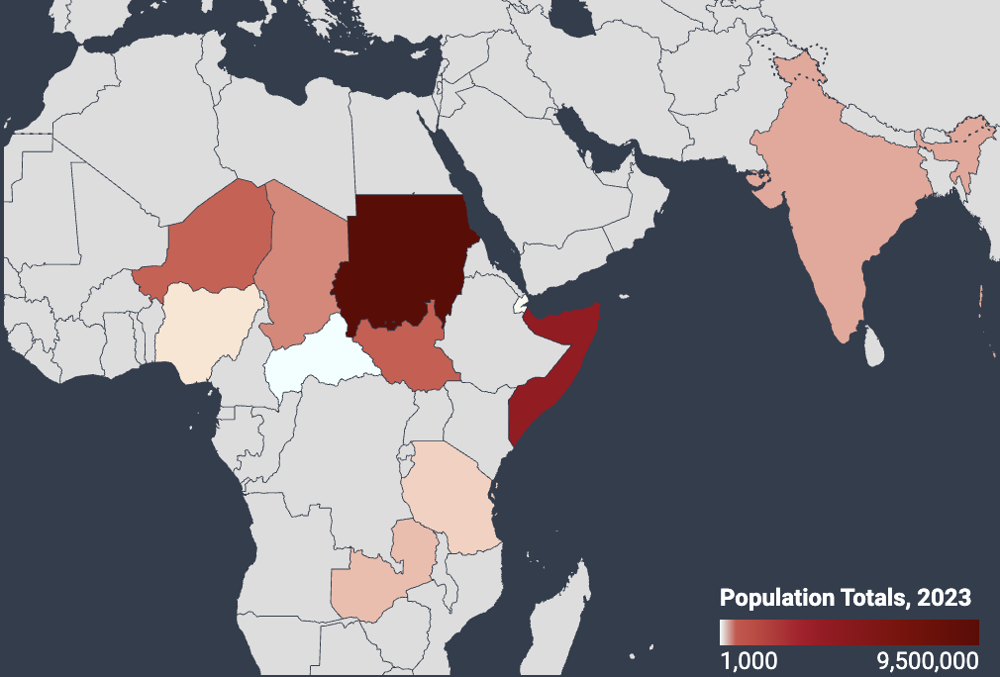
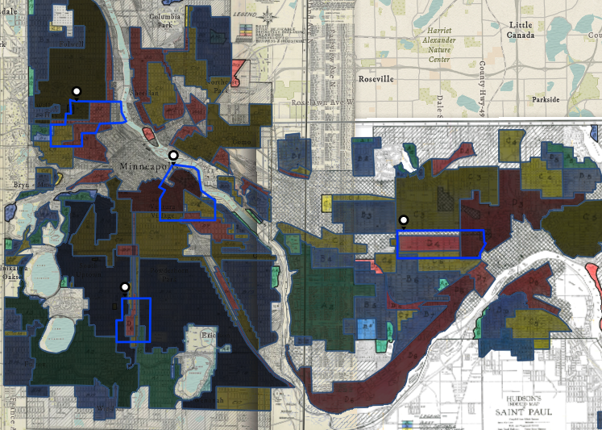
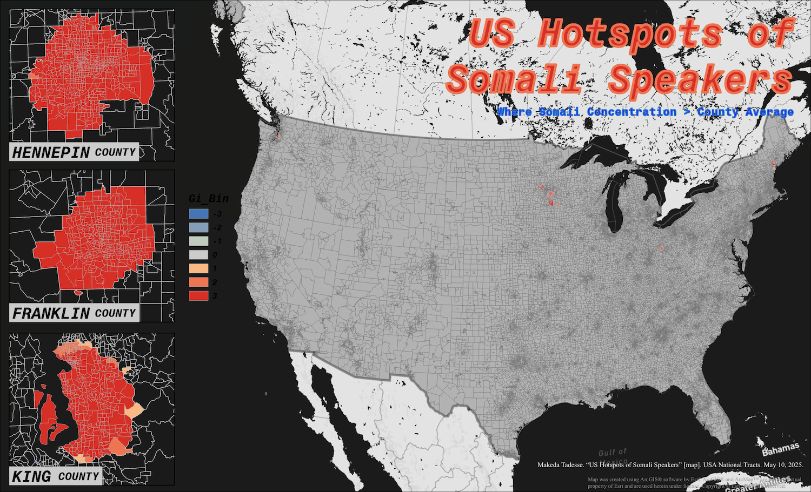
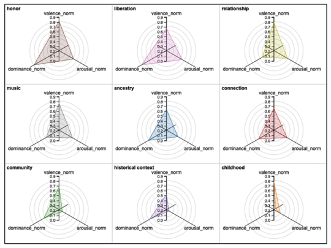
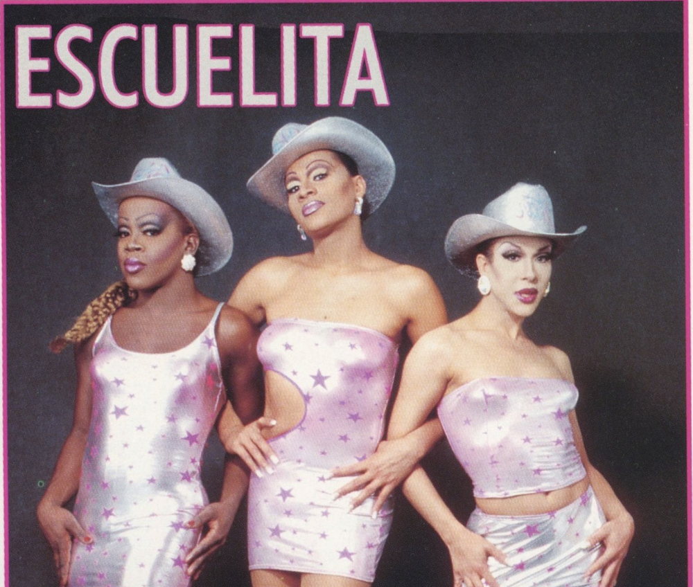
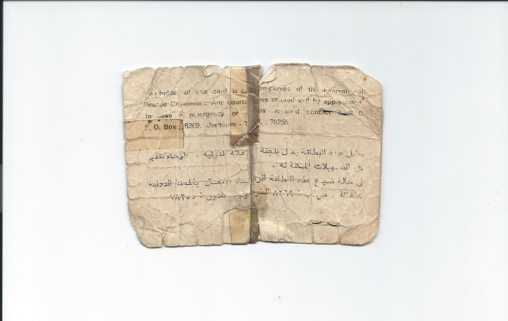

02Neighborhood Corridor
An interactive project mapping the potential route refugees in 1989-1995 Ethiopia and Eritrea may have taken to Khartoum, Sudan, taking into account conflict zones and elevation.
Story Maps

04Mapping Informal Settlements
Mapping the distribution of refugees and asylum seekers globally using UNHCR data.
Datawrapper

04Twin Cities Redlining
Georeferencing historically redlined regions against current racial demographics and public transit access to measure transit deserts and patterns of public displacement across Minneapolis–St. Paul.
ArcGIS Online

05Tracking Immigrant Acculturation Patterns Through Ethnic Enclaves and English Language Adoption
A spatial analysis of Somali acculturation patterns in three distinct U.S. counties: Hennepin (Minnesota), Franklin (Ohio), and King (Washington).
boundary crosswalk
 06
06
Return, Remains
A digital repository exploring nostalgia across diasporic narratives with interviews and reflections from artists part of Adera, Lije; Adera Lijen,
conducted

06Emotional Metadata & Cultural Memory
A toolkit for digital humanists and curators addressing the risk of artistic flattening in archival practice by building recommendations directly from conversations with artists about how their work is documented and described.

06Queerly Guided: The Nights We Lost in NYC
Contributed mapping, data cleaning and analysis, and user-centered research (running user experience surveys).
Collaborative project with students part of Advanced Digital Humanities Fall 2025 the Pratt Institute.
Visualizes queer night life through the exploration of bars, clubs, and other nightlife venues that no longer exist in NYC.
Story Maps

01Neighborhood Resurrection
Tracing three childhood friends who fled Ethiopia and reunited forty years later across different refugee camps and continents. A blend of spatial analysis, archival photography, oral history, and data humanities into one longitudinal narrative.
mapped and documented